The FABenergy network is an small network of plugs that can measure the power consumption of what you plug on them and publish it to Pachube. The Pachube FABEnergy feed is being tested and is going to go live soon.
Documentation is still in process. Please, come back soon!
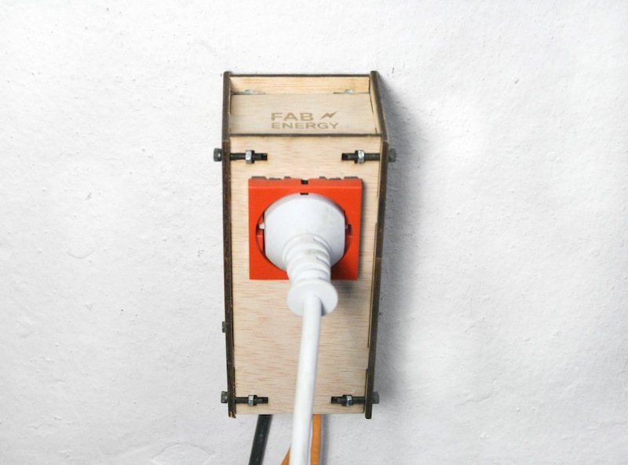
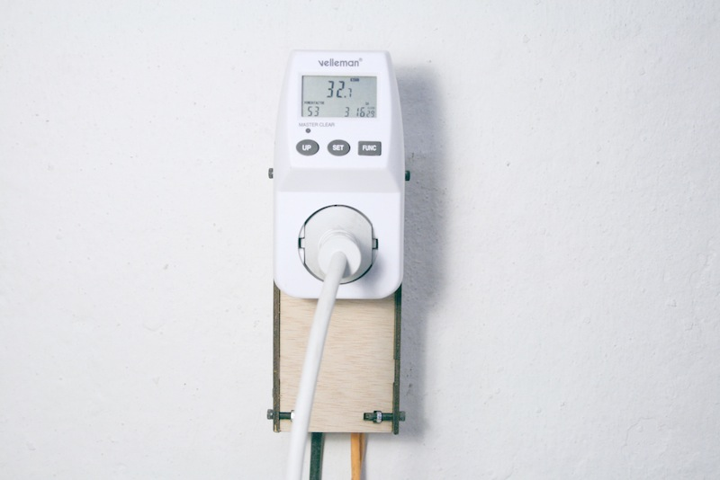
Measuring Power Consumption
To measure the power consumption of a device we need to know the potential difference (V) and the electric current its drawing (I). Having both values we can calculate the power consumption by:
P = I*V
Because I wanted to create a really simple node I decided just to measure the current and set the grid default value for the voltage (220V / 120 V). Although this method gives you some error when you're measuring low power consumptions above 1A it's more or less enough. There are different ways for measuring an electrical current. You can split them in to groups, invasive and non-invasive. Invasive methods have the advantage of requiring cheaper components, for example you can use an ACS712 IC. However, this methods are not really suitable for DIY projects because it requires you work directly with high voltage. That's why I decided to use a non-invasive method. The are two main methods, current transformers based on the induction effect and hall-effect sensors based on the electromagnetic effect.
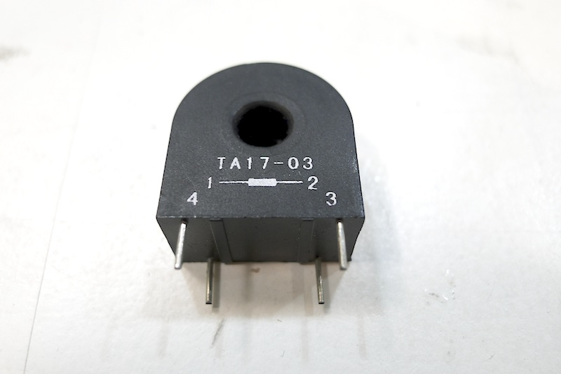For my project I decided to use a current transducer (CT) this sensor works by induction and it's based on the Rogowski principle. The current in the main wire produces a magnetic field in the ferrite core of the transducer. A secondary coil is wrapped around the ferrite core. However we still have to turn the current clamp output in a suitable voltage we can measure using our micro-controller ADC. First we need to create a voltage variation so a load is needed.
I*R = V
A simple resistor is setup in parallel with the current transducer acting as a load, creating a voltage drop proportional to the current flowing through the transducer. Because the current output is AC and the Attiny can't read a negative voltage a Voltage Divider is needed. Considering the ADC voltage reference is set on Vref = 5V (VCC) we have a range of 0-5V. Using a voltage divider we provide the current transducer with 2.5V offsetting the original 0V to 2.5V so we don't have anymore a negative voltage.
Finally to calculate the Power Consumption Average we need the Voltage RMS and the Current RMS. I based my code on Trystan Lea and Eric Sandeen work for the Open Energy Monitor. Considering the default value for the Voltage RMS is set on a default value, we'll just need to calculate the Current RMS from the values we get from our micro-controller 10-bits ADC (0-1023).
for (int n=0; n<Samples; n++)
{
I_lastSample=I_Sample;
I_Sample = analogRead(inPinI);
I_LastFiltered = I_Filtered;
I_Filtered = 0.996*(I_LastFiltered+I_Sample-I_lastSample);
I_Sq = I_Filtered * I_Filtered;
I_Sum += I_Sq;
}
To calculate the current root means square (I RMS) we first take several reading and we filter them by comparing each reading with its past reading. Once we achieve a set number of measurements we calculate the root means square.
I_Rms = I_Ratio * sqrt(I_Sum / Samples);
Once we have the Current RMS we can easily calculate the Power Average.
double P_Rms = V_Rms * I_Rms;
If we put together all this concepts we get a quick function for calculating the power consumption.
double Power(int inPinI, int Samples)
{
# define I_Cal 1
# define V_Rms 220
# define I_Ratio 1012 / 149 * 5 / 1024 * I_Cal
int I_lastSample = 0;
int I_Sample = 0;
double I_LastFiltered, I_Filtered;
double I_Sq, I_Sum;
for (int n=0; n<Samples; n++)
{
I_lastSample=I_Sample;
I_Sample = analogRead(inPinI);
I_LastFiltered = I_Filtered;
I_Filtered = 0.996*(I_LastFiltered+I_Sample-I_lastSample);
I_Sq = I_Filtered * I_Filtered;
I_Sum += I_Sq;
}
double I_Rms = I_Ratio * sqrt(I_Sum / Samples);
double P_Rms = V_Rms * I_Rms;
return P_Rms;
I_Sum = 0;
I_lastSample = 0;
I_Sample = 0;
}
Notice it makes use of the Arduino core libraries to simplify the ADC conversions and Pin addressing on the Atmega chips. You can download the Arduino core libraries and include them by simply adding.
#include <WProgram.h>
This will include all the standard avr c libraries and all the wiring libraries.
The sensors are designed to be plug-and-play. All the electronic circuit is on the brick and you just have to supply +5V, GND and the Signal.
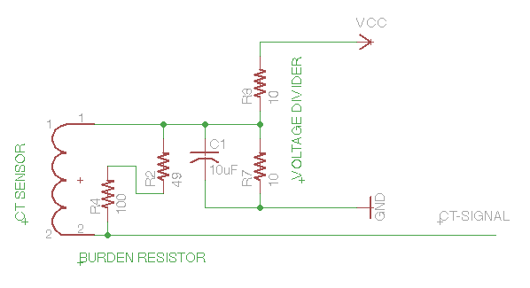 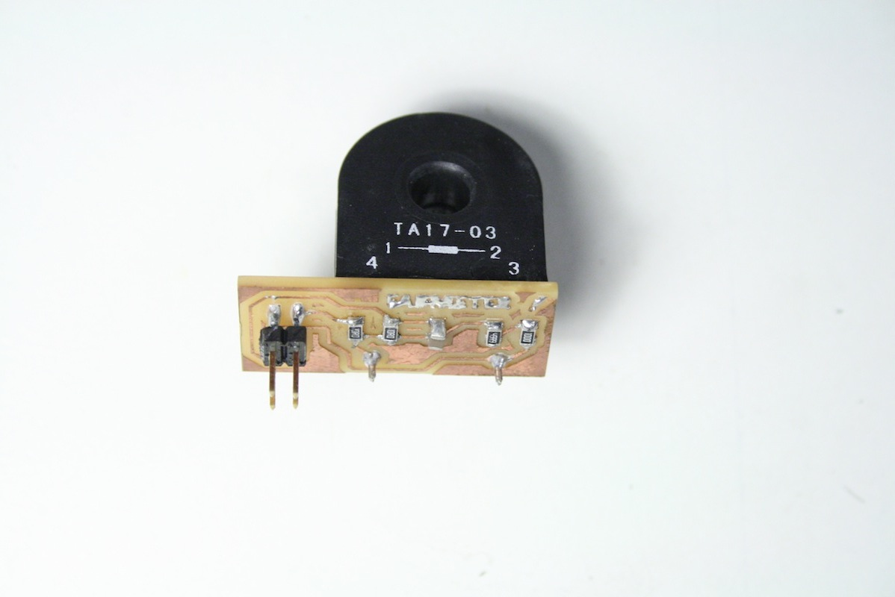The Network
The project goal was to be able to publish the Power Consumption data we're measuring to the internet. There are several different ways to do that. One solution is to connect each node directly to the internet using standard internet protocols. That way, each node has it's own IP and we use a standard protocol like Ethernet to communicate to our Internet Gateway. Although this solution is getting cheaper thanks to projects like the Nanode based on the ENC28J60 chip. I decided to link the nodes using a more simple solution and use a gateway to connect them to the Internet. There are many low cost protocols to create small micro-controllers networks, some examples are Modbus or Can. However, I decided to create my own network protocol to learn a little bit about networks and protocols.
1. Physical Layer.
The network physical layer is based on the RS-485 standard. RS-485 use differential signaling over a twisted pair cable, it works like RS-232 but over long distances. Multiple receivers can be connected to such a network in a linear, multi-drop configuration. By using differential signaling it means two wires are employed to send a single signal, that's why in order to keep a two wires network we'll have half-duplex communication only, we won't be able to send and receive at the same time.
2. Comunications protocol.
The data framing is based on a really simple structure based on an example by Igor Real. Data packets are 15 bytes, that's enough space for creating a complex message. Information is stored in ASCII except for the data value, however this is not really good considering its performance it makes it a really friendly because you can read it easily, each byte it represents a character encoded in ASCII. The data value is transmitted as a 32-bits float so 4-bytes are required.
There are three kind of messages.
3. Network Architecture.
http://pdfserv.maxim-ic.com/en/an/AN763.pdf
The network is a simple master-slave architecture because we just have half-duplex communication. There's a single master that request information to the slave nodes one after the other. Check this and this RS-485 application reports.
#. Programing the network
The network functions makes also use of the Arduino core libraries. The logic of bits and bytes gets a little bit confuse at the beginning, this tutorial helps as an introduction: The Bitmath Tutorial. For an ASCII encoding reference check this table
void sendENQ(char id[3], char data_type[2], char code[3], long value){
byte idByte[2]; // Byte array to store the 2 bytes id
idByte[0] = byte(idByte[0]); // id char array to byte
idByte[1] = byte(idByte[1]); // id char array to byte
byte data_typeByte = byte(data_type[0]); // data_type char array to byte
byte codeByte[2]; // byte array to store the 2 bytes code
codeByte[0] = byte(codeByte[0]); // code char array to byte
codeByte[1] = byte(codeByte[1]); // code char array to byte
byte sign = 0x20; // set sign as space ASCII ' ' (positive ) by default
if (value < 0.0) // if value is negative
{
sign = 0x2D; // set sign negative ASCII '-'
value = -value;
}
byte data[4]; // byte array to store a float as a little-endian 4 bytes
data[0] = (value >> 24); // float first 8-bits
data[1] = (value >> 16); // float second 8-bits
data[2] = (value >> 8); // float third 8-bits
data[3] = (value & 0xFF); // float fourth 8-bits
unsigned int checksum_ACK;
checksum_ACK=idByte[0]+idByte[1]+5+data_typeByte+codeByte[0]+codeByte[1]+sign+data[0]+data[1]+data[2]+data[3]+3; // Message checksum
UCSR0A=UCSR0A |(1 << TXC0); // Clear the transfer flag probably set by previous transfers.
digitalWrite(pinTX,HIGH); // Set MAX485 RE / DE pins HIGH to transmit mode
delay(1); // Wait the MAX485 to be on trasmitter mode
Serial.write(byte(0x00)); // Open Message // byte is required because 0x00 can be red as char null
Serial.write(idByte[0]); // Slave node id
Serial.write(idByte[1]); // Slave node id
Serial.write(0x05); // Message Control ENQ > Request
Serial.write(data_typeByte); // Function group
Serial.write(codeByte[0]); // Function code
Serial.write(codeByte[1]); // Function code
Serial.write(sign); // Positive / Negative Value
Serial.write(data[0]); // Requested Value
Serial.write(data[1]); // Requested Value
Serial.write(data[2]); // Requested Value
Serial.write(data[3]); // Requested Value
Serial.write(0x03); // Close Value
Serial.write(checksum_ACK >> 8); // Checksum first most significant bits
Serial.write(checksum_ACK & 0xFF); // Checksum first less significant bits
while (!(UCSR0A & (1 << TXC0))); // Wait for the transmision to complete
digitalWrite(pinTX,LOW); // Set MAX485 RE / DE pins LOW to receiver mode
}
The Node
The node design is really simple. 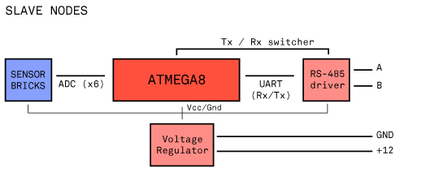 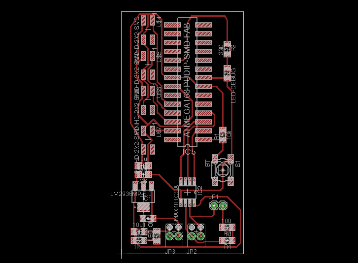 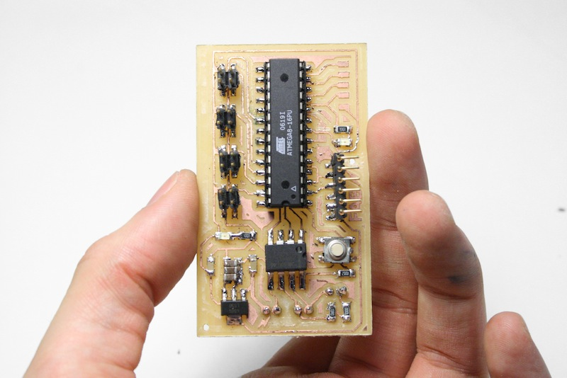 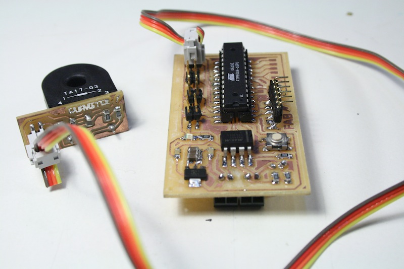 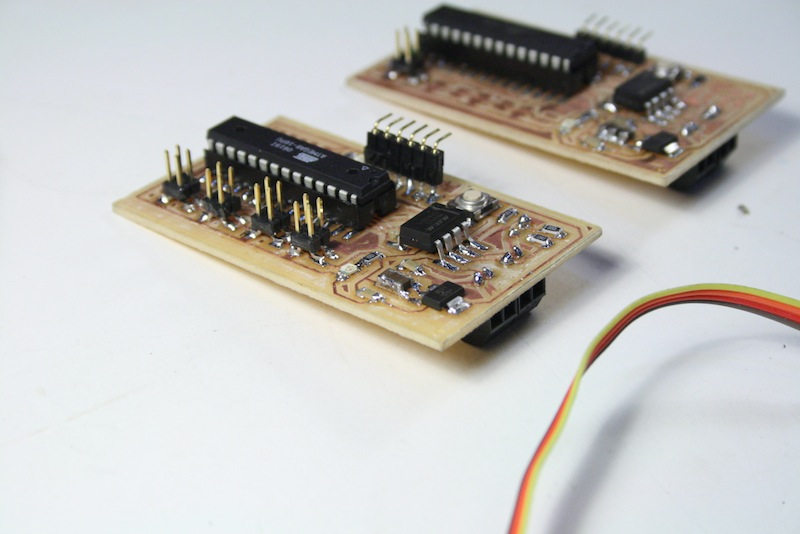 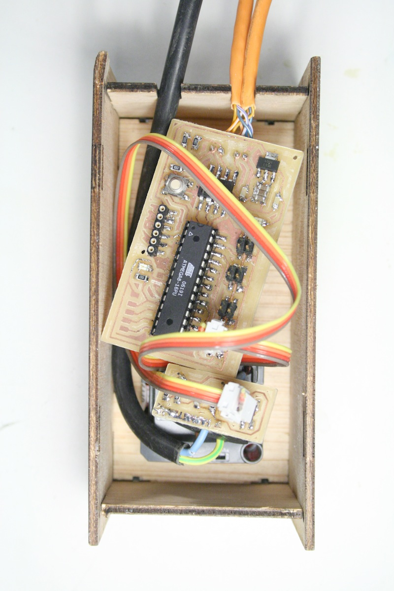The nodes housing is desiged to be lasercut on 3mm plywood and assembled using M3 Allen screws. The press-fit + screws system is based on the Makerbot structure design.
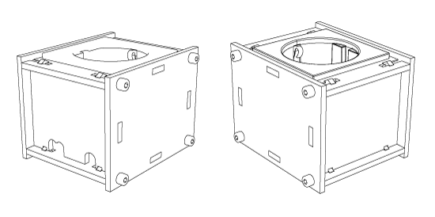 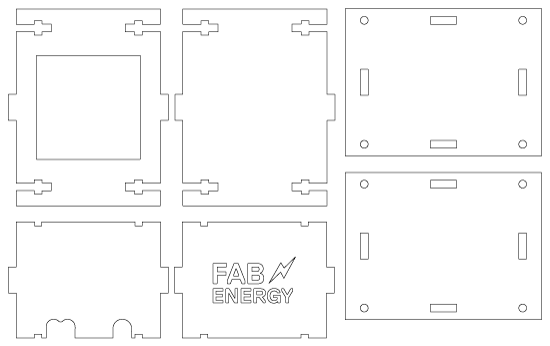The Gateway
The gateway is the same as the master node. It retrieve values from the nodes and it publish them to Pachube using standard HTTP PUTS.
The first version was designed to run on a host computer that acts as gateway and communicates with the network using a simple FTDI chip. It was written in Processing.
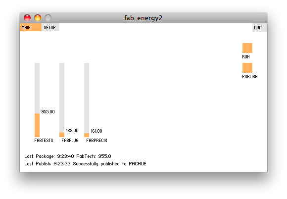The new version is designed to be standalone and is designed to be stand-alone. The master have the same design as the slave nodes and it communicates via SPI with an Arduino Ethernet-Shield based on the Wiznet 5100.
The code takes advantatge of several libraries builded on top of the Arduino core: the Pachube library, the Ethernet library and the SPI library.An step forward will be to move the design to the ENC28J60 and integrate it directly on the master node. Check the Nanode project for more information.
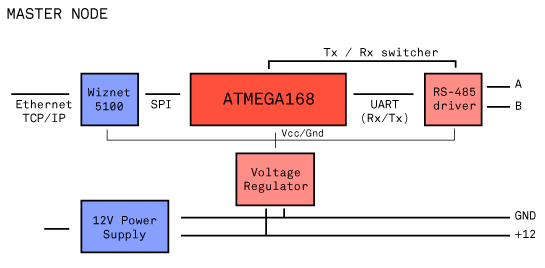#. Programing the gateway
The code structure is really simple because it is based on top of this powerful libraries.
dataout.updateData(tagId, requestPacket(nodeId, function, functionCode));
Development process / First prototypes
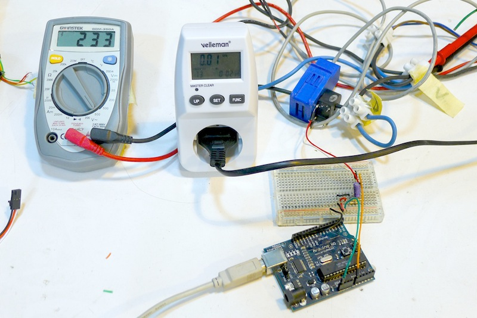 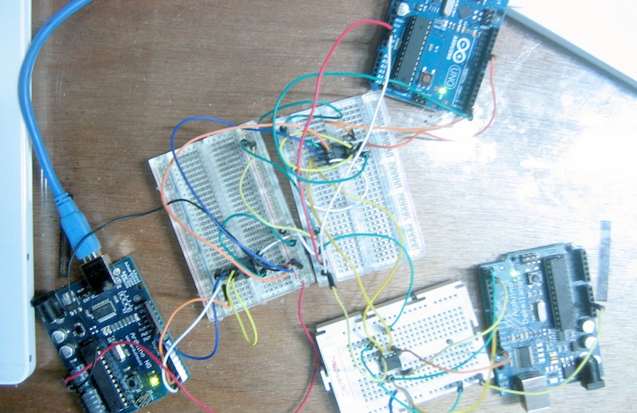 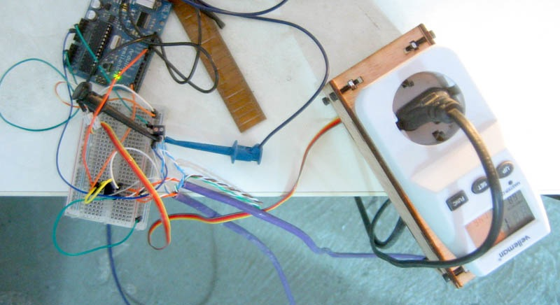 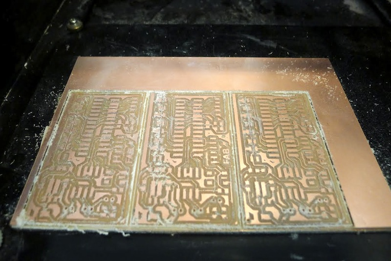 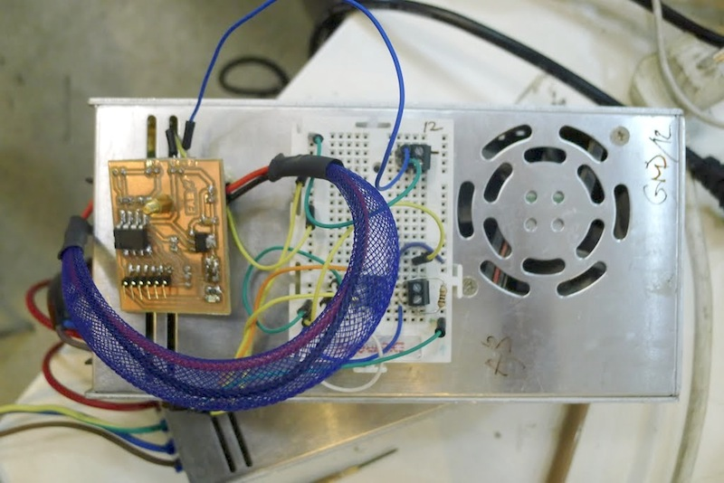 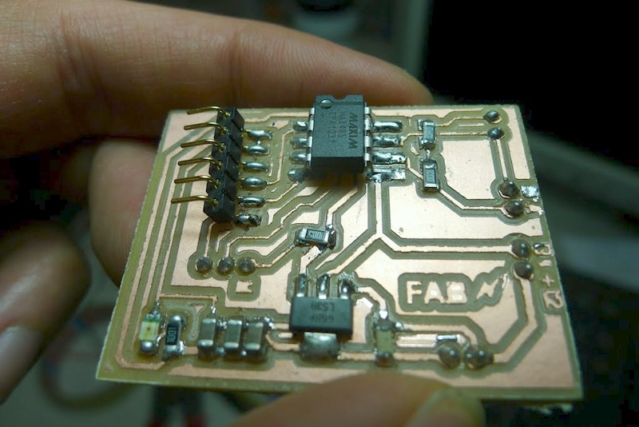 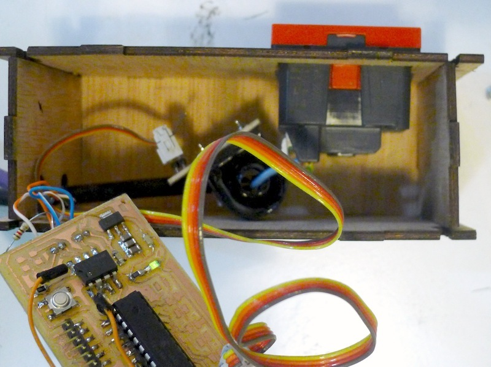 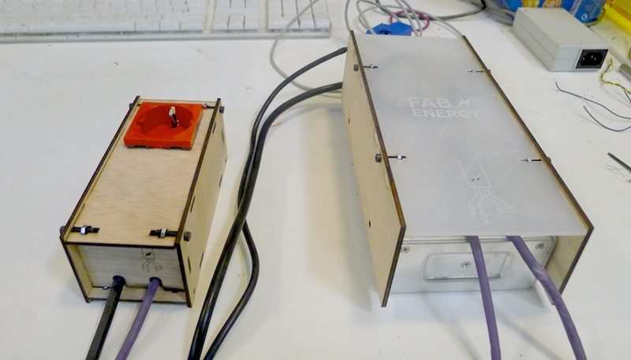 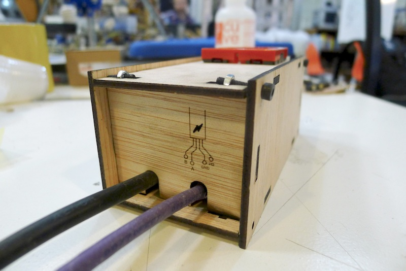 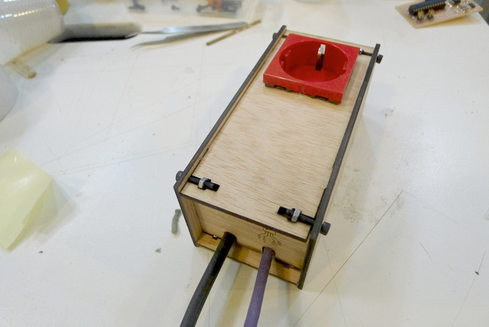 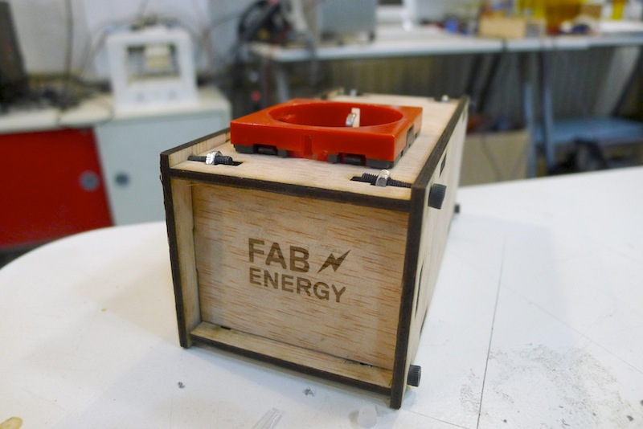Documentation is still in process. Please, come back soon!
{kind=link}